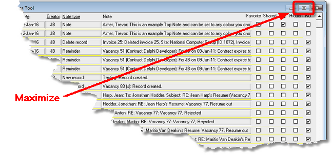

|
|
PRS News & Tips | February 2016 |
We’ve just released PRS 8.1.9. To download and install this recommended upgrade go to the Installing the Latest PRS Client section on our Updates web page and follow the instructions.
What’s New in PRS 8.1.9
Changes include a new option Remember form locations which allows you to customize your PRS on-screen forms layout.
For a full list of the changes since the previous release see the PRS Changelog web page.
Support for custom forms layout
 in version 8.1.9
in version 8.1.9
The PRS remembers the on-screen size and location of most resizable forms. This new feature allows you to create your own custom screen layouts which will be restored when the forms are next opened (handy if you have a large high resolution display).
Here’s a thumbnail image of a custom layout on a high resolution (2560 x 1440) display:
If you want to disable this feature, open the Options dialog (using the PRS Tools→Options… menu command) then untick the Remember form locations option on the Appearances page.
To return a form to its default location hold down the Ctrl key while you open it.
Personnel Summary form automatically synced with the Personnel form
in version 8.1.9
The Personnel Summary form is now synchronised with the Personnel form so you can open them both side-by-side and the Personnel Summary will automatically update to display the summary of the person on the Personnel form.

|
Tip
|
The Personnel Summary page will appear blank if the person’s summary has not yet been created — to create a summary for that person press the Candidate Summary button on the Personnel form. |
Tips and Tricks
Making it easier to view large numbers of records
PRS forms that display multiple rows of records (for example Notes, Roster, Timesheet and Mail tools) can be maximised (by clicking on the Maximize button at the top-right of the form). This allows you to view a greater number of rows on-screen at a time. Use the same technique for forms in Datasheet View.

Need help?
Our Support web page explains how to get answers to PRS questions and includes links to articles on Maintaining Database Reliability and Performance and PRS Best Practice Deployment.
|
Important
|
If you no longer wish to receive this newsletter please email support@prshq.com with the word UNSUBSCRIBE in the subject line. |